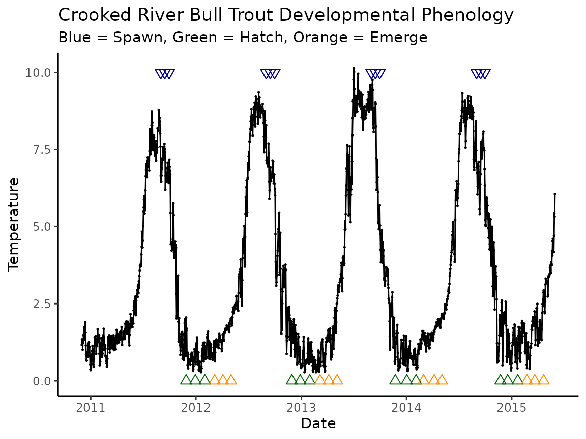

Predict fish phenology: advanced
Morgan Sparks, Bryan M. Maitland
Source:vignettes/Predict_phenology_advanced.Rmd
Predict_phenology_advanced.RmdOverview
The function predict_phenolgy() is purposefully kept fairly simple so it can be expanded to automate across datasets. Typically, this will take the form of loops or vectorizing in R (functions of the map() and apply() families). There are many reasons why you might want to automate your ability to predict including predicting over multiple years, multiple sites, predicting hatch or emergence, or even using multiple potential spawn dates. We’ll show some examples below (moving from less to more complicated). First, we load packages:
Multiple spawn dates
Given the example we used in the Predict Phenology-Basic vignette, perhaps we now want to expand it to predict multiple spawn dates (e.g., the early, peak, and late part of the spawning distribution) for the Woody Island population in Lake Iliamna. Using Table 1 from Sparks et al. (2019) we see that the spawning range is between August 14 and September 3rd, with the peak occurring August 18th. We can set these dates up as a vector to run the model over.
WI_spawn_dates <- c("1990-08-14", "1990-08-18", "1990-09-3")The we will go through the typical process of getting the model parameterized as we did previously.
sockeye_hatch_mod <- model_select(
author = "Beacham and Murray 1990",
species = "sockeye",
model = 2,
dev.type = "hatch"
)Now we can automate the model. We’ll demonstrate two ways—a loop and a vectorized approach.
Looping
We will show an example of how to set up a for loop to
run through each element of the woody_island dataset.
### Loop storage objects
OUT_loop_all <- NULL # empty object to store output in
OUT_loop_d2h <- NULL # empty object for days to hatch ( if we just wanted to output these data)
### Loop body
for (d in 1:length(WI_spawn_dates)) { # d will be our numerical iterator
WI_spawn <- WI_spawn_dates[d] # subset the element d of the vector and assign to object
# predict phenology
WI_hatch <- predict_phenology(
data = woody_island,
dates = date,
temperature = temp_c,
spawn.date = WI_spawn,
model = sockeye_hatch_mod
)
### ALL output ###
# do this if we want to maintain all info predict_phenology
OUT_loop_all[[d]] <- WI_hatch # store list into the dth list element of the OUT_loop object
### A single element of output ###
# alternatively, if you know you just want something like days to hatch you can access
# that part of the list and just store it as object
temp <- tibble(matrix(data = NA, ncol = 2, nrow = 1)) # empty dataframe to add in data
colnames(temp) <- c("spawn_date", "days_2_hatch") # change column names
temp$spawn_date <- WI_spawn # assign spawn date
temp$days_2_hatch <- WI_hatch$days2done # assign days to hathc
OUT_loop_d2h <- rbind(OUT_loop_d2h, temp) # row bind temp object and OUT object
}
### Loop output (note: we iteratively add to the NULL objects we make at the beginning)
# you can see OUT_loop is a list of lists with three lists each with four elements
# (i.e., the four outputs of predict_phenology())
glimpse(OUT_loop_all)
#> List of 3
#> $ :List of 4
#> ..$ days2done : int 71
#> ..$ dev.period:'data.frame': 1 obs. of 2 variables:
#> .. ..$ start: Date[1:1], format: "1990-08-14"
#> .. ..$ stop : Date[1:1], format: "1990-10-23"
#> ..$ ef.vals : num [1:71] 0.0213 0.0196 0.0165 0.0139 0.0147 ...
#> ..$ ef.tibble : spc_tbl_ [71 × 4] (S3: spec_tbl_df/tbl_df/tbl/data.frame)
#> .. ..- attr(*, "spec")=List of 3
#> .. .. ..- attr(*, "class")= chr "col_spec"
#> .. ..- attr(*, "problems")=<externalptr>
#> $ :List of 4
#> ..$ days2done : int 74
#> ..$ dev.period:'data.frame': 1 obs. of 2 variables:
#> .. ..$ start: Date[1:1], format: "1990-08-18"
#> .. ..$ stop : Date[1:1], format: "1990-10-30"
#> ..$ ef.vals : num [1:74] 0.0147 0.0155 0.0157 0.0166 0.0169 ...
#> ..$ ef.tibble : spc_tbl_ [74 × 4] (S3: spec_tbl_df/tbl_df/tbl/data.frame)
#> .. ..- attr(*, "spec")=List of 3
#> .. .. ..- attr(*, "class")= chr "col_spec"
#> .. ..- attr(*, "problems")=<externalptr>
#> $ :List of 4
#> ..$ days2done : int 110
#> ..$ dev.period:'data.frame': 1 obs. of 2 variables:
#> .. ..$ start: Date[1:1], format: "1990-09-03"
#> .. ..$ stop : Date[1:1], format: "1990-12-21"
#> ..$ ef.vals : num [1:110] 0.0163 0.0165 0.0165 0.0165 0.0165 ...
#> ..$ ef.tibble : spc_tbl_ [110 × 4] (S3: spec_tbl_df/tbl_df/tbl/data.frame)
#> .. ..- attr(*, "spec")=List of 3
#> .. .. ..- attr(*, "class")= chr "col_spec"
#> .. ..- attr(*, "problems")=<externalptr>
# you can also see we made a tibble of dates and predicted days to hatch
OUT_loop_d2h
#> # A tibble: 3 × 2
#> spawn_date days_2_hatch
#> <chr> <int>
#> 1 1990-08-14 71
#> 2 1990-08-18 74
#> 3 1990-09-3 110If you don’t want the full output of each run of
predict_phenolgy() and you just for example want the
predicted days to hatch, then it’s easier to access those elements
within the loop as demonstrated with the temp object
section demonstrated in the loop.
Vectorizing
Mapping:
Vectorizing, while historically about prioritizing speed, is now more
about making your code more readable (see sections in r4ds
and Advanced R).
We’ll demonstrate using map() from the purrr
package. If you are unfamiliar with mapping but want to learn more about
how it works and it’s power, we highly recommend the linked chapters
from R for Data Science (Grolemund and Garrett
(n.d.)) and Advanced R (“9
Functionals | Advanced r” (n.d.)) shown above.
# map works by applying a function over a list (our vector is a very simple list)
# if you are familiar with apply() functions, map is essentially the same
results_map <- map(
WI_spawn_dates, # vector we are mapping over
predict_phenology, # function we are mapping with (note no "()"),
data = woody_island, # additional arguments required by predict_phenology
dates = date,
temperature = temp_c,
model = sockeye_hatch_mod
)
# we now have a list of lists the same as OUT_loop
glimpse(results_map)
#> List of 3
#> $ :List of 4
#> ..$ days2done : int 71
#> ..$ dev.period:'data.frame': 1 obs. of 2 variables:
#> .. ..$ start: Date[1:1], format: "1990-08-14"
#> .. ..$ stop : Date[1:1], format: "1990-10-23"
#> ..$ ef.vals : num [1:71] 0.0213 0.0196 0.0165 0.0139 0.0147 ...
#> ..$ ef.tibble : spc_tbl_ [71 × 4] (S3: spec_tbl_df/tbl_df/tbl/data.frame)
#> .. ..- attr(*, "spec")=List of 3
#> .. .. ..- attr(*, "class")= chr "col_spec"
#> .. ..- attr(*, "problems")=<externalptr>
#> $ :List of 4
#> ..$ days2done : int 74
#> ..$ dev.period:'data.frame': 1 obs. of 2 variables:
#> .. ..$ start: Date[1:1], format: "1990-08-18"
#> .. ..$ stop : Date[1:1], format: "1990-10-30"
#> ..$ ef.vals : num [1:74] 0.0147 0.0155 0.0157 0.0166 0.0169 ...
#> ..$ ef.tibble : spc_tbl_ [74 × 4] (S3: spec_tbl_df/tbl_df/tbl/data.frame)
#> .. ..- attr(*, "spec")=List of 3
#> .. .. ..- attr(*, "class")= chr "col_spec"
#> .. ..- attr(*, "problems")=<externalptr>
#> $ :List of 4
#> ..$ days2done : int 110
#> ..$ dev.period:'data.frame': 1 obs. of 2 variables:
#> .. ..$ start: Date[1:1], format: "1990-09-03"
#> .. ..$ stop : Date[1:1], format: "1990-12-21"
#> ..$ ef.vals : num [1:110] 0.0163 0.0165 0.0165 0.0165 0.0165 ...
#> ..$ ef.tibble : spc_tbl_ [110 × 4] (S3: spec_tbl_df/tbl_df/tbl/data.frame)
#> .. ..- attr(*, "spec")=List of 3
#> .. .. ..- attr(*, "class")= chr "col_spec"
#> .. ..- attr(*, "problems")=<externalptr>
# we can then access days to hatch easily as such
results_map |>
map_dbl("days2done")
#> [1] 71 74 110Apply:
While tidyverse and associated packages have become quite popular in
the world of R, the base functionality of R has long had a set of
functions to do similar things as map. They are called the apply family.
Because hatchR is built using much of the functionality of
the tidyverse we opt for using map() over apply functions,
however we will demonstrate a similar workflow as above using the apply
family.
# lapply() is the equivalent function as map() in the apply family
# they both output lists
results_lapply <- lapply(WI_spawn_dates, # vector we are mapping over
predict_phenology, # function we are mapping with (note no "()"),
data = woody_island, # additional arguments required by predict phenology
dates = date,
temperature = temp_c,
model = sockeye_hatch_mod
)
# you can see that lapply and map output the same results
glimpse(results_lapply)
#> List of 3
#> $ :List of 4
#> ..$ days2done : int 71
#> ..$ dev.period:'data.frame': 1 obs. of 2 variables:
#> .. ..$ start: Date[1:1], format: "1990-08-14"
#> .. ..$ stop : Date[1:1], format: "1990-10-23"
#> ..$ ef.vals : num [1:71] 0.0213 0.0196 0.0165 0.0139 0.0147 ...
#> ..$ ef.tibble : spc_tbl_ [71 × 4] (S3: spec_tbl_df/tbl_df/tbl/data.frame)
#> .. ..- attr(*, "spec")=List of 3
#> .. .. ..- attr(*, "class")= chr "col_spec"
#> .. ..- attr(*, "problems")=<externalptr>
#> $ :List of 4
#> ..$ days2done : int 74
#> ..$ dev.period:'data.frame': 1 obs. of 2 variables:
#> .. ..$ start: Date[1:1], format: "1990-08-18"
#> .. ..$ stop : Date[1:1], format: "1990-10-30"
#> ..$ ef.vals : num [1:74] 0.0147 0.0155 0.0157 0.0166 0.0169 ...
#> ..$ ef.tibble : spc_tbl_ [74 × 4] (S3: spec_tbl_df/tbl_df/tbl/data.frame)
#> .. ..- attr(*, "spec")=List of 3
#> .. .. ..- attr(*, "class")= chr "col_spec"
#> .. ..- attr(*, "problems")=<externalptr>
#> $ :List of 4
#> ..$ days2done : int 110
#> ..$ dev.period:'data.frame': 1 obs. of 2 variables:
#> .. ..$ start: Date[1:1], format: "1990-09-03"
#> .. ..$ stop : Date[1:1], format: "1990-12-21"
#> ..$ ef.vals : num [1:110] 0.0163 0.0165 0.0165 0.0165 0.0165 ...
#> ..$ ef.tibble : spc_tbl_ [110 × 4] (S3: spec_tbl_df/tbl_df/tbl/data.frame)
#> .. ..- attr(*, "spec")=List of 3
#> .. .. ..- attr(*, "class")= chr "col_spec"
#> .. ..- attr(*, "problems")=<externalptr>Iterating over multiple variables
An obvious extension of the example above is to use sites with multiple years of data and to predict hatch and emergence. In the example from the Predict Phenology-Basic vignette, we saw we had some days where the logger appeared to be out of the water, so let’s use a cleaner dataset.
In this example we will use temperature from the Crooked River, a
tributary of the Boise River in Idaho, USA, from a reach with known bull
trout spawning. The dataset is included as
crooked_river.
# look at data structure
glimpse(crooked_river)
#> Rows: 3,367
#> Columns: 2
#> $ date <dttm> 2011-09-09, 2011-09-10, 2011-09-11, 2011-09-12, 2011-09-13, 20…
#> $ temp_c <dbl> 7.57, 7.39, 7.19, 7.24, 7.59, 7.68, 7.51, 7.41, 6.19, 6.65, 6.7…
# visually check data
plot_check_temp(
data = crooked_river,
dates = date,
temperature = temp_c,
temp_min = 0,
temp_max = 12
)
# we can use some functions from tidyverse to do a datacheck
# this shows the number of observations per year
crooked_river |>
mutate(year = year(date)) |> # add a column converting the date to year
group_by(year) |>
tally() # count observations/year
#> # A tibble: 6 × 2
#> year n
#> <dbl> <int>
#> 1 2010 31
#> 2 2011 479
#> 3 2012 731
#> 4 2013 729
#> 5 2014 730
#> 6 2015 667We see we have 5 full years of data to use. For the sake of this exercise, let’s assume bull trout spawning in this system starts September 1st, peaks September 15th, and is mostly done by September 30th.
Remember, our data starts just barely in 2010, so our spawning years would be 2011-2015. However we may not have enough days of record to make predictions for 2015 so best to check that first.
First let’s just check to see if fish spawning in 2015 would have enough data to hatch and emerge.
### set up our bull trout hatch and emergence models
bull_hatch_mod <- model_select(
author = "Austin et al. 2017",
species = "bull trout",
model = "MM",
dev.type = "hatch"
)
bull_emerge_mod <- model_select(
author = "Austin et al. 2017",
species = "bull trout",
model = "MM",
dev.type = "emerge"
)
# models are different
bull_hatch_mod
#> expression(1/exp(5.086 - (x * 0.131)))
bull_emerge_mod
#> expression(1/exp(5.59 - (x * 0.126)))
### check 2015 dates
dates_2015 <- c("2015-09-01", "2015-09-15", "2015-09-30")
## hatch first
hatch_2015 <- map(dates_2015,
predict_phenology,
data = crooked_river,
dates = date,
temperature = temp_c,
model = bull_hatch_mod
)
hatch_2015 |>
map_dbl("days2done")
#> [1] 66 70 83See how we receive a warning “Fish did not develop, did not accrue enough effective units. Spawn date =2015-09-15. Did your fish spawn too close to the end of your data?” It tells us the spawn date we used so we can reference which date isn’t working if we use an string of multiple dates to predict over.
If fish aren’t hatching they definitely are not going to emerge, so we won’t use 2015.
Looping
We will build a nested loop to automate over model selection
variables and then over the dates. So the order of applying the
predict_phenology() function in the loop example below is
as follows:
-
Predict hatch
2011 spawn dates
…
2014 spawn dates
-
Predict emergence
2011 spawn dates
…
2014 spawn dates
## mini loop to make vector of dates
spawn_dates <- NULL
for (year in 2011:2014) {
temp_dates <- c(paste0(year, "-09-01"), paste0(year, "-09-15"), paste0(year, "-09-30"))
spawn_dates <- c(spawn_dates, temp_dates)
}
spawn_dates
#> [1] "2011-09-01" "2011-09-15" "2011-09-30" "2012-09-01" "2012-09-15"
#> [6] "2012-09-30" "2013-09-01" "2013-09-15" "2013-09-30" "2014-09-01"
#> [11] "2014-09-15" "2014-09-30"
### loop for prediction
OUT <- NULL
i <- 1 # build a counter for adding to our list of lists (OUT)
for (mod in c("hatch", "emerge")) { # loop for hatch and emerge
# here we just iterate model selection over the two hatch and emerge options
# in the first for loop
dev_mod <- model_select(
author = "Austin et al. 2017",
species = "bull trout",
model = "MM",
dev.type = mod
)
for (d in 1:length(spawn_dates)) { # nested loop over spawn dates
# here we iterate over every date of spawn_dates but run this loop twice,
# once for each value of the first for loop
spawn <- spawn_dates[d] # get spawn date
temp <- predict_phenology(
data = crooked_river,
dates = date,
temperature = temp_c,
spawn.date = spawn,
model = dev_mod
) # notice we are calling the mod we set in the fist loop
OUT[[i]] <- temp
i <- i + 1 # add to your counter
}
}
# look at results
glimpse(OUT)
#> List of 24
#> $ :List of 4
#> ..$ days2done : int 68
#> ..$ dev.period:'data.frame': 1 obs. of 2 variables:
#> .. ..$ start: POSIXct[1:1], format: "2011-09-01"
#> .. ..$ stop : POSIXct[1:1], format: "2011-10-08"
#> ..$ ef.vals : num [1:68] 0.0148 0.0144 0.0144 0.0148 0.0152 ...
#> ..$ ef.tibble : spc_tbl_ [68 × 4] (S3: spec_tbl_df/tbl_df/tbl/data.frame)
#> .. ..- attr(*, "spec")=List of 3
#> .. .. ..- attr(*, "class")= chr "col_spec"
#> .. ..- attr(*, "problems")=<externalptr>
#> $ :List of 4
#> ..$ days2done : int 76
#> ..$ dev.period:'data.frame': 1 obs. of 2 variables:
#> .. ..$ start: POSIXct[1:1], format: "2011-09-15"
#> .. ..$ stop : POSIXct[1:1], format: "2011-10-22"
#> ..$ ef.vals : num [1:76] 0.0165 0.0165 0.0163 0.0163 0.0139 ...
#> ..$ ef.tibble : spc_tbl_ [76 × 4] (S3: spec_tbl_df/tbl_df/tbl/data.frame)
#> .. ..- attr(*, "spec")=List of 3
#> .. .. ..- attr(*, "class")= chr "col_spec"
#> .. ..- attr(*, "problems")=<externalptr>
#> $ :List of 4
#> ..$ days2done : int 102
#> ..$ dev.period:'data.frame': 1 obs. of 2 variables:
#> .. ..$ start: POSIXct[1:1], format: "2011-09-30"
#> .. ..$ stop : POSIXct[1:1], format: "2011-11-19"
#> ..$ ef.vals : num [1:102] 0.0152 0.0152 0.0158 0.0158 0.0153 ...
#> ..$ ef.tibble : spc_tbl_ [102 × 4] (S3: spec_tbl_df/tbl_df/tbl/data.frame)
#> .. ..- attr(*, "spec")=List of 3
#> .. .. ..- attr(*, "class")= chr "col_spec"
#> .. ..- attr(*, "problems")=<externalptr>
#> $ :List of 4
#> ..$ days2done : int 68
#> ..$ dev.period:'data.frame': 1 obs. of 2 variables:
#> .. ..$ start: POSIXct[1:1], format: "2012-09-01"
#> .. ..$ stop : POSIXct[1:1], format: "2012-10-05"
#> ..$ ef.vals : num [1:68] 0.0183 0.0183 0.0158 0.0158 0.0156 ...
#> ..$ ef.tibble : spc_tbl_ [68 × 4] (S3: spec_tbl_df/tbl_df/tbl/data.frame)
#> .. ..- attr(*, "spec")=List of 3
#> .. .. ..- attr(*, "class")= chr "col_spec"
#> .. ..- attr(*, "problems")=<externalptr>
#> $ :List of 4
#> ..$ days2done : int 83
#> ..$ dev.period:'data.frame': 1 obs. of 2 variables:
#> .. ..$ start: POSIXct[1:1], format: "2012-09-15"
#> .. ..$ stop : POSIXct[1:1], format: "2012-10-26"
#> ..$ ef.vals : num [1:83] 0.015 0.015 0.0153 0.0153 0.0146 ...
#> ..$ ef.tibble : spc_tbl_ [83 × 4] (S3: spec_tbl_df/tbl_df/tbl/data.frame)
#> .. ..- attr(*, "spec")=List of 3
#> .. .. ..- attr(*, "class")= chr "col_spec"
#> .. ..- attr(*, "problems")=<externalptr>
#> $ :List of 4
#> ..$ days2done : int 103
#> ..$ dev.period:'data.frame': 1 obs. of 2 variables:
#> .. ..$ start: POSIXct[1:1], format: "2012-09-30"
#> .. ..$ stop : POSIXct[1:1], format: "2012-11-20"
#> ..$ ef.vals : num [1:103] 0.0143 0.0143 0.0139 0.0139 0.0136 ...
#> ..$ ef.tibble : spc_tbl_ [103 × 4] (S3: spec_tbl_df/tbl_df/tbl/data.frame)
#> .. ..- attr(*, "spec")=List of 3
#> .. .. ..- attr(*, "class")= chr "col_spec"
#> .. ..- attr(*, "problems")=<externalptr>
#> $ :List of 4
#> ..$ days2done : int 59
#> ..$ dev.period:'data.frame': 1 obs. of 2 variables:
#> .. ..$ start: POSIXct[1:1], format: "2013-09-01"
#> .. ..$ stop : POSIXct[1:1], format: "2013-09-30"
#> ..$ ef.vals : num [1:59] 0.0203 0.0203 0.0212 0.0212 0.021 ...
#> ..$ ef.tibble : spc_tbl_ [59 × 4] (S3: spec_tbl_df/tbl_df/tbl/data.frame)
#> .. ..- attr(*, "spec")=List of 3
#> .. .. ..- attr(*, "class")= chr "col_spec"
#> .. ..- attr(*, "problems")=<externalptr>
#> $ :List of 4
#> ..$ days2done : int 84
#> ..$ dev.period:'data.frame': 1 obs. of 2 variables:
#> .. ..$ start: POSIXct[1:1], format: "2013-09-15"
#> .. ..$ stop : POSIXct[1:1], format: "2013-10-26"
#> ..$ ef.vals : num [1:84] 0.0202 0.0202 0.02 0.02 0.0182 ...
#> ..$ ef.tibble : spc_tbl_ [84 × 4] (S3: spec_tbl_df/tbl_df/tbl/data.frame)
#> .. ..- attr(*, "spec")=List of 3
#> .. .. ..- attr(*, "class")= chr "col_spec"
#> .. ..- attr(*, "problems")=<externalptr>
#> $ :List of 4
#> ..$ days2done : int 108
#> ..$ dev.period:'data.frame': 1 obs. of 2 variables:
#> .. ..$ start: POSIXct[1:1], format: "2013-09-30"
#> .. ..$ stop : POSIXct[1:1], format: "2013-11-22"
#> ..$ ef.vals : num [1:108] 0.013 0.013 0.0119 0.0119 0.0115 ...
#> ..$ ef.tibble : spc_tbl_ [108 × 4] (S3: spec_tbl_df/tbl_df/tbl/data.frame)
#> .. ..- attr(*, "spec")=List of 3
#> .. .. ..- attr(*, "class")= chr "col_spec"
#> .. ..- attr(*, "problems")=<externalptr>
#> $ :List of 4
#> ..$ days2done : int 66
#> ..$ dev.period:'data.frame': 1 obs. of 2 variables:
#> .. ..$ start: POSIXct[1:1], format: "2014-09-01"
#> .. ..$ stop : POSIXct[1:1], format: "2014-10-03"
#> ..$ ef.vals : num [1:66] 0.0153 0.0153 0.0155 0.0155 0.015 ...
#> ..$ ef.tibble : spc_tbl_ [66 × 4] (S3: spec_tbl_df/tbl_df/tbl/data.frame)
#> .. ..- attr(*, "spec")=List of 3
#> .. .. ..- attr(*, "class")= chr "col_spec"
#> .. ..- attr(*, "problems")=<externalptr>
#> $ :List of 4
#> ..$ days2done : int 71
#> ..$ dev.period:'data.frame': 1 obs. of 2 variables:
#> .. ..$ start: POSIXct[1:1], format: "2014-09-15"
#> .. ..$ stop : POSIXct[1:1], format: "2014-10-20"
#> ..$ ef.vals : num [1:71] 0.0149 0.0149 0.017 0.017 0.017 ...
#> ..$ ef.tibble : spc_tbl_ [71 × 4] (S3: spec_tbl_df/tbl_df/tbl/data.frame)
#> .. ..- attr(*, "spec")=List of 3
#> .. .. ..- attr(*, "class")= chr "col_spec"
#> .. ..- attr(*, "problems")=<externalptr>
#> $ :List of 4
#> ..$ days2done : int 93
#> ..$ dev.period:'data.frame': 1 obs. of 2 variables:
#> .. ..$ start: POSIXct[1:1], format: "2014-09-30"
#> .. ..$ stop : POSIXct[1:1], format: "2014-11-15"
#> ..$ ef.vals : num [1:93] 0.0142 0.0142 0.0123 0.0123 0.012 ...
#> ..$ ef.tibble : spc_tbl_ [93 × 4] (S3: spec_tbl_df/tbl_df/tbl/data.frame)
#> .. ..- attr(*, "spec")=List of 3
#> .. .. ..- attr(*, "class")= chr "col_spec"
#> .. ..- attr(*, "problems")=<externalptr>
#> $ :List of 4
#> ..$ days2done : int 143
#> ..$ dev.period:'data.frame': 1 obs. of 2 variables:
#> .. ..$ start: POSIXct[1:1], format: "2011-09-01"
#> .. ..$ stop : POSIXct[1:1], format: "2011-11-15"
#> ..$ ef.vals : num [1:143] 0.00863 0.00842 0.00843 0.00864 0.00889 ...
#> ..$ ef.tibble : spc_tbl_ [143 × 4] (S3: spec_tbl_df/tbl_df/tbl/data.frame)
#> .. ..- attr(*, "spec")=List of 3
#> .. .. ..- attr(*, "class")= chr "col_spec"
#> .. ..- attr(*, "problems")=<externalptr>
#> $ :List of 4
#> ..$ days2done : int 165
#> ..$ dev.period:'data.frame': 1 obs. of 2 variables:
#> .. ..$ start: POSIXct[1:1], format: "2011-09-15"
#> .. ..$ stop : POSIXct[1:1], format: "2011-12-06"
#> ..$ ef.vals : num [1:165] 0.00962 0.00962 0.0095 0.0095 0.00815 ...
#> ..$ ef.tibble : spc_tbl_ [165 × 4] (S3: spec_tbl_df/tbl_df/tbl/data.frame)
#> .. ..- attr(*, "spec")=List of 3
#> .. .. ..- attr(*, "class")= chr "col_spec"
#> .. ..- attr(*, "problems")=<externalptr>
#> $ :List of 4
#> ..$ days2done : int 199
#> ..$ dev.period:'data.frame': 1 obs. of 2 variables:
#> .. ..$ start: POSIXct[1:1], format: "2011-09-30"
#> .. ..$ stop : POSIXct[1:1], format: "2012-01-07"
#> ..$ ef.vals : num [1:199] 0.00889 0.00889 0.00921 0.00921 0.00894 ...
#> ..$ ef.tibble : spc_tbl_ [199 × 4] (S3: spec_tbl_df/tbl_df/tbl/data.frame)
#> .. ..- attr(*, "spec")=List of 3
#> .. .. ..- attr(*, "class")= chr "col_spec"
#> .. ..- attr(*, "problems")=<externalptr>
#> $ :List of 4
#> ..$ days2done : int 139
#> ..$ dev.period:'data.frame': 1 obs. of 2 variables:
#> .. ..$ start: POSIXct[1:1], format: "2012-09-01"
#> .. ..$ stop : POSIXct[1:1], format: "2012-11-09"
#> ..$ ef.vals : num [1:139] 0.0106 0.0106 0.00918 0.00918 0.00909 ...
#> ..$ ef.tibble : spc_tbl_ [139 × 4] (S3: spec_tbl_df/tbl_df/tbl/data.frame)
#> .. ..- attr(*, "spec")=List of 3
#> .. .. ..- attr(*, "class")= chr "col_spec"
#> .. ..- attr(*, "problems")=<externalptr>
#> $ :List of 4
#> ..$ days2done : int 166
#> ..$ dev.period:'data.frame': 1 obs. of 2 variables:
#> .. ..$ start: POSIXct[1:1], format: "2012-09-15"
#> .. ..$ stop : POSIXct[1:1], format: "2012-12-07"
#> ..$ ef.vals : num [1:166] 0.00878 0.00878 0.00892 0.00892 0.00855 ...
#> ..$ ef.tibble : spc_tbl_ [166 × 4] (S3: spec_tbl_df/tbl_df/tbl/data.frame)
#> .. ..- attr(*, "spec")=List of 3
#> .. .. ..- attr(*, "class")= chr "col_spec"
#> .. ..- attr(*, "problems")=<externalptr>
#> $ :List of 4
#> ..$ days2done : int 197
#> ..$ dev.period:'data.frame': 1 obs. of 2 variables:
#> .. ..$ start: POSIXct[1:1], format: "2012-09-30"
#> .. ..$ stop : POSIXct[1:1], format: "2013-01-06"
#> ..$ ef.vals : num [1:197] 0.00836 0.00836 0.00817 0.00817 0.00796 ...
#> ..$ ef.tibble : spc_tbl_ [197 × 4] (S3: spec_tbl_df/tbl_df/tbl/data.frame)
#> .. ..- attr(*, "spec")=List of 3
#> .. .. ..- attr(*, "class")= chr "col_spec"
#> .. ..- attr(*, "problems")=<externalptr>
#> $ :List of 4
#> ..$ days2done : int 130
#> ..$ dev.period:'data.frame': 1 obs. of 2 variables:
#> .. ..$ start: POSIXct[1:1], format: "2013-09-01"
#> .. ..$ stop : POSIXct[1:1], format: "2013-11-05"
#> ..$ ef.vals : num [1:130] 0.0117 0.0117 0.0122 0.0122 0.0121 ...
#> ..$ ef.tibble : spc_tbl_ [130 × 4] (S3: spec_tbl_df/tbl_df/tbl/data.frame)
#> .. ..- attr(*, "spec")=List of 3
#> .. .. ..- attr(*, "class")= chr "col_spec"
#> .. ..- attr(*, "problems")=<externalptr>
#> $ :List of 4
#> ..$ days2done : int 172
#> ..$ dev.period:'data.frame': 1 obs. of 2 variables:
#> .. ..$ start: POSIXct[1:1], format: "2013-09-15"
#> .. ..$ stop : POSIXct[1:1], format: "2013-12-09"
#> ..$ ef.vals : num [1:172] 0.0117 0.0117 0.0116 0.0116 0.0105 ...
#> ..$ ef.tibble : spc_tbl_ [172 × 4] (S3: spec_tbl_df/tbl_df/tbl/data.frame)
#> .. ..- attr(*, "spec")=List of 3
#> .. .. ..- attr(*, "class")= chr "col_spec"
#> .. ..- attr(*, "problems")=<externalptr>
#> $ :List of 4
#> ..$ days2done : int 205
#> ..$ dev.period:'data.frame': 1 obs. of 2 variables:
#> .. ..$ start: POSIXct[1:1], format: "2013-09-30"
#> .. ..$ stop : POSIXct[1:1], format: "2014-01-10"
#> ..$ ef.vals : num [1:205] 0.00766 0.00766 0.00704 0.00704 0.0068 ...
#> ..$ ef.tibble : spc_tbl_ [205 × 4] (S3: spec_tbl_df/tbl_df/tbl/data.frame)
#> .. ..- attr(*, "spec")=List of 3
#> .. .. ..- attr(*, "class")= chr "col_spec"
#> .. ..- attr(*, "problems")=<externalptr>
#> $ :List of 4
#> ..$ days2done : int 128
#> ..$ dev.period:'data.frame': 1 obs. of 2 variables:
#> .. ..$ start: POSIXct[1:1], format: "2014-09-01"
#> .. ..$ stop : POSIXct[1:1], format: "2014-11-03"
#> ..$ ef.vals : num [1:128] 0.00892 0.00892 0.00906 0.00906 0.00874 ...
#> ..$ ef.tibble : spc_tbl_ [128 × 4] (S3: spec_tbl_df/tbl_df/tbl/data.frame)
#> .. ..- attr(*, "spec")=List of 3
#> .. .. ..- attr(*, "class")= chr "col_spec"
#> .. ..- attr(*, "problems")=<externalptr>
#> $ :List of 4
#> ..$ days2done : int 149
#> ..$ dev.period:'data.frame': 1 obs. of 2 variables:
#> .. ..$ start: POSIXct[1:1], format: "2014-09-15"
#> .. ..$ stop : POSIXct[1:1], format: "2014-11-28"
#> ..$ ef.vals : num [1:149] 0.00869 0.00869 0.00987 0.00987 0.0099 ...
#> ..$ ef.tibble : spc_tbl_ [149 × 4] (S3: spec_tbl_df/tbl_df/tbl/data.frame)
#> .. ..- attr(*, "spec")=List of 3
#> .. .. ..- attr(*, "class")= chr "col_spec"
#> .. ..- attr(*, "problems")=<externalptr>
#> $ :List of 4
#> ..$ days2done : int 184
#> ..$ dev.period:'data.frame': 1 obs. of 2 variables:
#> .. ..$ start: POSIXct[1:1], format: "2014-09-30"
#> .. ..$ stop : POSIXct[1:1], format: "2014-12-30"
#> ..$ ef.vals : num [1:184] 0.00829 0.00829 0.00721 0.00721 0.00706 ...
#> ..$ ef.tibble : spc_tbl_ [184 × 4] (S3: spec_tbl_df/tbl_df/tbl/data.frame)
#> .. ..- attr(*, "spec")=List of 3
#> .. .. ..- attr(*, "class")= chr "col_spec"
#> .. ..- attr(*, "problems")=<externalptr>The output of this loop is again a list of lists. This time 24 lists
that comprise the elements of each predict_phenology()
iteration. Simply, the loop selects the hatch model, runs it for every
date in our vector (spawn_dates) and then switches over to
an emerge model and does the same thing. The point of having an iterator
(i) is that we can make a new list addition to OUT for
every combination of the dev_mod (hatch and emerge) and the
12 dates we want to run—resulting in 24 total individual lists that are
appended to our OUT list of lists as we walk through each iteration of
the for loop.
If that sounds a bit complicated, it’s because it is. And this is where the vectorized approaches really shine.
A quick note about accessing lists. Even if you want to write loops instead of vectorizing, we do recommend accessing those results via a vectorized approach. It’s hard to pull out a lot of information from from very large nested loops. You would probably write a custom loop to do so. However, those results are easily accessed by map, like so:
mapped_results <- OUT |>
map_df("ef.tibble")The above code outputs the ef.tibble element from every
one of your lists from each combination of spawn date and phenology type
into a dataframe like object which can then easily be plotted. Notice,
we now use map_df() because we know the list element we are
accessing is in the format of a dataframe type object (a tibble).
Vectorizing
We’ll use the purrr function pmap() to vectorize our
multiple-input map function. Let’s again set up our iterative variables.
We’ll do the same workflow as the past example but now exclusively with
mapping.
# slightly cleaner spawn dates with map output is a list of vectors
spawn_dates <- map(
c(2011:2014), # year vector to map for custom function
function(year) { # custom paste function
c(
paste0(year, "-09-01"),
paste0(year, "-09-15"),
paste0(year, "-09-30")
)
}
) |> # pipe to unlist() to make a vector
unlist()
dev_mods <- map(c("hatch", "emerge"),
model_select,
author = "Austin et al. 2017",
species = "bull trout",
model = "MM"
)
# we then set up a variable grid for all combinations of our models and dates
# it is very important to make the names of the columns in var_grid to match the
# arguments of the predict_phenology function (e.i., model = and spawn.date =)
var_grid <- expand_grid(model = dev_mods, spawn.date = spawn_dates)
head(var_grid)
#> # A tibble: 6 × 2
#> model spawn.date
#> <list> <chr>
#> 1 <expression> 2011-09-01
#> 2 <expression> 2011-09-15
#> 3 <expression> 2011-09-30
#> 4 <expression> 2012-09-01
#> 5 <expression> 2012-09-15
#> 6 <expression> 2012-09-30
### mutliple input mapping
crooked_predictions <- pmap(var_grid, # combos of variables to iterate over
predict_phenology, # function
data = crooked_river, # additional arguments required by function
dates = date,
temperature = temp_c
)Now that we’ve demonstrated both loops and mapping to get at iterating over multiple variables, let’s verify our results match.
# loop predictions
preds_loop <- OUT |> map_dbl("days2done")
preds_pmap <- crooked_predictions |> map_dbl("days2done")
# everything matches!
preds_loop == preds_pmap
#> [1] TRUE TRUE TRUE TRUE TRUE TRUE TRUE TRUE TRUE TRUE TRUE TRUE TRUE TRUE TRUE
#> [16] TRUE TRUE TRUE TRUE TRUE TRUE TRUE TRUE TRUEGetting usable output
Because the basic output of these iterative processes are big lists
of lists, it can be a little annoying to access all that data. However,
this is again were the different flavors of map can be our friend. We’ve
already shown examples of how to access the predictions, but
predict_phenology() outputs much more data than just point
estimates.
First we’ll demonstrate an example of how we can take those prediction and use them to create an object that’s useful for plotting.
# get predictions
days <- crooked_predictions |>
map_dbl("days2done")
# make a vector of what type of phenology we were predicting
# remember we ran hatch over 15 spawn dates then emerge over thos same 15
phenology <- c(rep("hatch", 12), rep("emerge", 12))
# make a vector of our spawn dates replicated twice and turn into a timepoint
spawning <- rep(spawn_dates, 2) |>
ymd(tz = "UTC") # we do this because the crooked_river dataset is ymd_hms
# put them all together in an object
bull_trout_phenology <- tibble(phenology, spawning, days)
head(bull_trout_phenology)
#> # A tibble: 6 × 3
#> phenology spawning days
#> <chr> <dttm> <dbl>
#> 1 hatch 2011-09-01 00:00:00 68
#> 2 hatch 2011-09-15 00:00:00 76
#> 3 hatch 2011-09-30 00:00:00 102
#> 4 hatch 2012-09-01 00:00:00 68
#> 5 hatch 2012-09-15 00:00:00 83
#> 6 hatch 2012-09-30 00:00:00 103We could then make a plot with our original data:
# filter crooked_river to correct size
crooked_river_11_15 <- crooked_river |> filter(date < ymd_hms("2015-06-01 00:00:00"))
ggplot(data = crooked_river_11_15, aes(x = date, y = temp_c)) +
geom_point(size = 0.25) +
geom_line() +
geom_point(
data = bull_trout_phenology,
aes(x = spawning, y = 10), color = "darkblue", shape = 25, size = 2.5
) +
geom_point(
data = bull_trout_phenology |> filter(phenology == "hatch"),
aes(x = spawning + days(days), y = 0),
color = "darkgreen", shape = 24, size = 2.5
) +
geom_point(
data = bull_trout_phenology |> filter(phenology == "emerge"),
aes(x = spawning + days(days), y = 0),
color = "darkorange", shape = 24, size = 2.5
) +
labs(
title = "Crooked River Bull Trout Developmental Phenology",
subtitle = "Blue = Spawn, Green = Hatch, Orange = Emerge",
x = "Date",
y = "Temperature"
) +
theme_classic()
Not the best looking plot, but a good example of how to translate output to a visual representation. For better looking plots, please see the Plotting your data vignette.
Other data types you might want might include the tibble with dates, temperature, and values and cumulative sums of effective values or the, alternatively, the developmental period.
# the tibble with all temperature and effective values for each phenological period
all_data <- crooked_predictions |>
map_df("ef.tibble")
head(all_data)
#> # A tibble: 6 × 4
#> dates temperature ef_vals ef_cumsum
#> <dttm> <dbl> <dbl> <dbl>
#> 1 2011-09-01 00:00:00 6.65 0.0148 0.0148
#> 2 2011-09-02 00:00:00 6.45 0.0144 0.0292
#> 3 2011-09-03 00:00:00 6.46 0.0144 0.0436
#> 4 2011-09-04 00:00:00 6.66 0.0148 0.0584
#> 5 2011-09-05 00:00:00 6.88 0.0152 0.0736
#> 6 2011-09-06 00:00:00 7.18 0.0158 0.0894
# the phenological durations for each prediction set
development_period <- crooked_predictions |>
map_df("dev.period")
head(development_period)
#> start stop
#> 1 2011-09-01 2011-10-08
#> 2 2011-09-15 2011-10-22
#> 3 2011-09-30 2011-11-19
#> 4 2012-09-01 2012-10-05
#> 5 2012-09-15 2012-10-26
#> 6 2012-09-30 2012-11-20Naming your lists
A problem with this approach is that you end up with very large lists
of lists without labels which require you to remember the data structure
you feed to your mapping function. However, purrr does have a method to
get around this which is the set_names() function which you
would pipe into your mapping function.
# to use the simple Iliamna Lake example within a single season
WI_named_list <- WI_spawn_dates |>
set_names() |>
map(predict_phenology, # note we leave out the input row (WI_spawn_dates) because we are piping it in as input
data = woody_island, # additional arguments required by predict phenology
dates = date,
temperature = temp_c,
model = sockeye_hatch_mod
)
# you can now see each list is named according to its respective spawn date
glimpse(WI_named_list)
#> List of 3
#> $ 1990-08-14:List of 4
#> ..$ days2done : int 71
#> ..$ dev.period:'data.frame': 1 obs. of 2 variables:
#> .. ..$ start: Date[1:1], format: "1990-08-14"
#> .. ..$ stop : Date[1:1], format: "1990-10-23"
#> ..$ ef.vals : num [1:71] 0.0213 0.0196 0.0165 0.0139 0.0147 ...
#> ..$ ef.tibble : spc_tbl_ [71 × 4] (S3: spec_tbl_df/tbl_df/tbl/data.frame)
#> .. ..- attr(*, "spec")=List of 3
#> .. .. ..- attr(*, "class")= chr "col_spec"
#> .. ..- attr(*, "problems")=<externalptr>
#> $ 1990-08-18:List of 4
#> ..$ days2done : int 74
#> ..$ dev.period:'data.frame': 1 obs. of 2 variables:
#> .. ..$ start: Date[1:1], format: "1990-08-18"
#> .. ..$ stop : Date[1:1], format: "1990-10-30"
#> ..$ ef.vals : num [1:74] 0.0147 0.0155 0.0157 0.0166 0.0169 ...
#> ..$ ef.tibble : spc_tbl_ [74 × 4] (S3: spec_tbl_df/tbl_df/tbl/data.frame)
#> .. ..- attr(*, "spec")=List of 3
#> .. .. ..- attr(*, "class")= chr "col_spec"
#> .. ..- attr(*, "problems")=<externalptr>
#> $ 1990-09-3 :List of 4
#> ..$ days2done : int 110
#> ..$ dev.period:'data.frame': 1 obs. of 2 variables:
#> .. ..$ start: Date[1:1], format: "1990-09-03"
#> .. ..$ stop : Date[1:1], format: "1990-12-21"
#> ..$ ef.vals : num [1:110] 0.0163 0.0165 0.0165 0.0165 0.0165 ...
#> ..$ ef.tibble : spc_tbl_ [110 × 4] (S3: spec_tbl_df/tbl_df/tbl/data.frame)
#> .. ..- attr(*, "spec")=List of 3
#> .. .. ..- attr(*, "class")= chr "col_spec"
#> .. ..- attr(*, "problems")=<externalptr>
# therefore a single elemet could be accessed with its name and the $ operator
# if we wanted the dev.period for fish spawning on August 18th we would do the following
WI_named_list$`1990-08-18`$dev.period
#> start stop
#> 1 1990-08-18 1990-10-30This approach works well for the example above, but not so well with
our examples with pmap() because the variable grid we
create has a bunch of expressions which don’t work for naming lists.
However, if we were to do a pmap() example where it was a
site x dates combination, that still work and would name the lists
according to their site and then the date used to predict phenology
(e.g. named_list$site1$`date`$dev.period)
References
:::::::